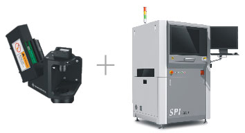
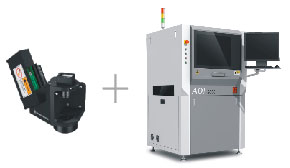

昌和自动化设备有限公司
18125023620
235468338@qq.com
“高速三维数字光栅控制器”凭借PDG自动光栅控制技术、PMP轮廓测试技术为锡膏印刷、微电子元器件提供高精度的三维和二维测量。内部结构模块化设计，实现了高集成，简单化，有利于各种应用及设备维护。
1.世界首创的可编程光栅(PDG)技术形成全光谱结构光栅，实现了对结构光栅的软件调制及控制，提高了设备的检测能力和适用范围。
2.运用先进的相位轮廓调制测量技术(PMP)，8比特的灰阶分辨率，达到0.37微米的检测分辨率。对焊膏印刷进行高精度的三维和二维测量。
3.自动检测所有需要检测的物体的体积，面积、高度、XY位置形状不良等工艺缺陷。
4. 克服反射率的差异,同步漫反射技术（DL）完全解决焊膏的结构阴影和亮点干扰。
5.高精度工业数字相机,配合500万像素的高精度工业数字相机，确保了世界最快的检测速度。
6.超强的稳定性,控制器由可编程控制器、数字光栅、影像系统组成。
SPI 解决焊膏缺陷，包括体积、面积、高度、XY偏移、形状，漏印、少锡、多锡、高度偏高、高度偏低、连锡、偏位、形状不良。
印刷机与SGO-500三维数字光栅控制器(PDG)组合，快速提升3大优势：降低成本产品合并后价格直接下调25%。
提高产品检测自控能力形成真正的闭环控制，通过印刷后100%检测结果，自动对印刷机优化和调整。
自行组合，误判、识别错误 快速模块化组合，根据客户来做检测装置选配及持续升级。
3D AOI 创新技术解决了现有 2D AOI 无法解决的瓶颈。 利用3维测量核心技术，不受密脚距、透明度、颜色、阴影等周围环境及元器件特性的影响，在原有的2D-AOI基础上快速提升检测能力。
| SGO-500领先的技术参数 | |
| 测量原理 | 3D 白光 PMP PDG(可编程数字光栅) |
| 测量项目 | 体积、面积、高度、XY偏移、形状,轮廓 |
| 检测不良类型 | 漏印、少锡、多锡、高度偏高、高度偏低、连锡、偏位、形状不良 |
| 相机 | 500万像素 |
| FOV尺寸 | 48×34mm |
| 精度 | 高精度：±1μm |
| 分辨率 | XY方向：10μm Z轴：0.37um |
| 重复精度 | 体积：小于1%（4 Sigma) 高度：小于1μm(4 Sigma), 面积：小于1%（5 Sigma) |
| Gage R&R | ＜＜10%（6 Sigma） |
| 检测速度 | 高精度模式：小于0.5秒/FOV |
| Mark点检测时间 | 0.5秒/个 |
| 最大测量高度 | 700μm(2000) μm |
| 弯曲PCB最大测量高度 | ±5mm |
| 最小焊盘间距 | 100μm |
| 最小测量大小 | 长方形：150μm(5.9 mils), 圆形：200μm(7.87 mils) |
| 工程统计数据 | Histogram, Xbar-R Chart, Xbar-S Chart,Cp & Cpk, % Gage Repeatability Data,SPI Daily/Weekly/MonthlyReports |
| 读取检测位置 | 支持Gerber Format(274x,274d_)格式，人工Teach模式 |
| 操作系统支持 | Windows®XP Professional ＆windows®7 professional |
| 电源 | 200-240VAC,50/60HZ单相 |